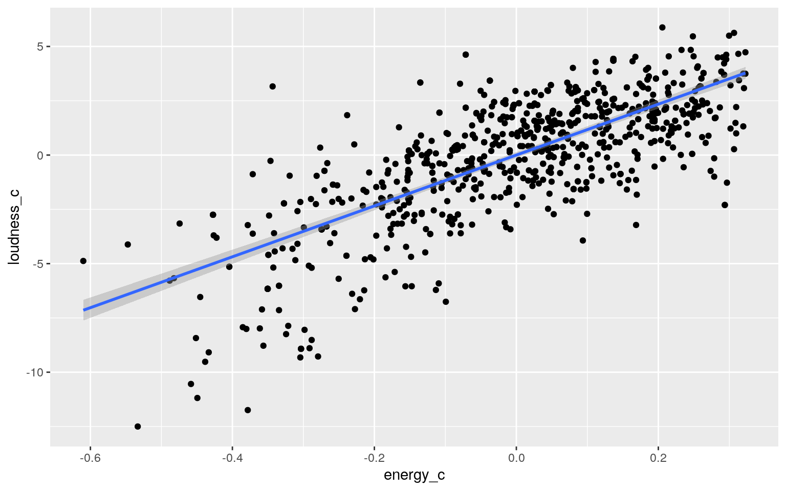

Dataset
library(tidyverse)
spotify_songs <- readr::read_csv('https://raw.githubusercontent.com/rfordatascience/tidytuesday/master/data/2020/2020-01-21/spotify_songs.csv')
music <- spotify_songs %>% select(-track_id, -track_popularity, -playlist_id, -track_album_id, -mode, -playlist_subgenre, -liveness, -speechiness, -acousticness, -instrumentalness, -playlist_name, -key) %>% arrange(track_album_release_date) %>% filter(track_album_release_date > 2020)
music <- music %>% mutate(pop=ifelse(playlist_genre == "pop",1,0),
edm=ifelse(playlist_genre == "edm",1,0),
rb=ifelse(playlist_genre == "r&b",1,0),
latin=ifelse(playlist_genre == "latin",1,0),
rap=ifelse(playlist_genre == "rap",1,0),
rock=ifelse(playlist_genre == "rock",1,0))
head(music)## # A tibble: 6 x 17
## track_name track_artist track_album_name
track_album_rel… playlist_genre danceability energy
## <chr> <chr> <chr> <chr> <chr> <dbl> <dbl>
## 1 Now & For… 香取慎吾 20200101 2020-01-01 pop 0.826
0.569
## 2 Wrong Dir… Hailee Stei… Wrong Direction 2020-01-01 pop
0.378 0.388
## 3 Dangerous No Friends No Friends & Ko… 2020-01-01 pop
0.684 0.580
## 4 Uncut Lar… Larry Smith Uncut Larry Smi… 2020-01-01 pop
0.553 0.578
## 5 Well Known Atlas in Mo… Well Known 2020-01-01 pop
0.585 0.290
## 6 Fill Into… Anju Fill Into Me 2020-01-01 pop 0.512
0.328
## # … with 10 more variables: loudness <dbl>, valence
<dbl>, tempo <dbl>, duration_ms <dbl>,
## # pop <dbl>, edm <dbl>, rb <dbl>, latin <dbl>, rap
<dbl>, rock <dbl>My dataset is about different kinds of music and certain characteristics about each song. It includes the track name, track artist, the album the track is on (track_album_name), the date the album was released (track_album_release_date). The categorical variable that I will use is playlist_genre which gives the genre of the playlist that the song is found in. It includes multiple groups such as pop, rap, rock, r&b, edm, and latin. The numerical data that is included in my dataset is danceability (how danceable the song is from 0-1), energy (a measure of intesity and activity of the song from 0-1), loudness (from -60db to 0db), valence (how positive or negative the song sounds from 0-1), tempo of the song (BPM), and the duration of the song in milliseconds. In total there are 785 observations or songs in the dataset.
I also made the categorical variable of playlist_genre, numerical by breaking it up into multiple variables and giving it the value of 1 if the song matches that playlist_genre and a 0 if that criteria is not met. For example, if the song is pop, under the variable of pop, there will be a 1 for that song.
#MANOVA test
manova<-manova(cbind(danceability, energy, loudness, tempo)~playlist_genre, data=music)
summary(manova)## Df Pillai approx F num Df den Df Pr(>F)
## playlist_genre 5 0.33982 14.465 20 3116 < 2.2e-16 ***
## Residuals 779
## ---
## Signif. codes: 0 '***' 0.001 '**' 0.01 '*' 0.05 '.' 0.1
' ' 1#Univariate ANOVAs
summary.aov(manova)## Response danceability :
## Df Sum Sq Mean Sq F value Pr(>F)
## playlist_genre 5 2.6813 0.53625 30.466 < 2.2e-16 ***
## Residuals 779 13.7116 0.01760
## ---
## Signif. codes: 0 '***' 0.001 '**' 0.01 '*' 0.05 '.' 0.1
' ' 1
##
## Response energy :
## Df Sum Sq Mean Sq F value Pr(>F)
## playlist_genre 5 3.7962 0.75923 26.672 < 2.2e-16 ***
## Residuals 779 22.1744 0.02847
## ---
## Signif. codes: 0 '***' 0.001 '**' 0.01 '*' 0.05 '.' 0.1
' ' 1
##
## Response loudness :
## Df Sum Sq Mean Sq F value Pr(>F)
## playlist_genre 5 425.5 85.101 10.924 3.542e-10 ***
## Residuals 779 6068.7 7.790
## ---
## Signif. codes: 0 '***' 0.001 '**' 0.01 '*' 0.05 '.' 0.1
' ' 1
##
## Response tempo :
## Df Sum Sq Mean Sq F value Pr(>F)
## playlist_genre 5 10022 2004.41 2.7482 0.01801 *
## Residuals 779 568171 729.36
## ---
## Signif. codes: 0 '***' 0.001 '**' 0.01 '*' 0.05 '.' 0.1
' ' 1#Post-hoc T-tests
pairwise.t.test(music$danceability,music$playlist_genre, p.adj="none")##
## Pairwise comparisons using t tests with pooled SD
##
## data: music$danceability and music$playlist_genre
##
## edm latin pop r&b rap
## latin 9.5e-05 - - - -
## pop 0.1970 5.8e-07 - - -
## r&b 0.0284 0.2128 0.0013 - -
## rap 0.0001 0.8265 4.8e-07 0.2730 -
## rock < 2e-16 < 2e-16 6.8e-14 < 2e-16 < 2e-16
##
## P value adjustment method: nonepairwise.t.test(music$energy,music$playlist_genre, p.adj="none")##
## Pairwise comparisons using t tests with pooled SD
##
## data: music$energy and music$playlist_genre
##
## edm latin pop r&b rap
## latin 0.00049 - - - -
## pop 9.8e-12 0.00402 - - -
## r&b 5.9e-12 0.00033 0.23356 - -
## rap 2.0e-13 0.00054 0.50090 0.54286 -
## rock 0.00200 1.2e-07 1.0e-13 1.6e-14 5.7e-15
##
## P value adjustment method: nonepairwise.t.test(music$loudness,music$playlist_genre, p.adj="none")##
## Pairwise comparisons using t tests with pooled SD
##
## data: music$loudness and music$playlist_genre
##
## edm latin pop r&b rap
## latin 0.22760 - - - -
## pop 0.00104 3.0e-05 - - -
## r&b 0.01078 0.00067 0.84645 - -
## rap 3.4e-06 6.4e-08 0.15722 0.16556 -
## rock 0.05479 0.30356 5.6e-05 0.00036 8.3e-07
##
## P value adjustment method: nonepairwise.t.test(music$tempo,music$playlist_genre, p.adj="none")##
## Pairwise comparisons using t tests with pooled SD
##
## data: music$tempo and music$playlist_genre
##
## edm latin pop r&b rap
## latin 0.90330 - - - -
## pop 0.03291 0.06674 - - -
## r&b 0.18327 0.25161 0.65372 - -
## rap 0.31760 0.42399 0.28084 0.63946 -
## rock 0.05301 0.05228 0.00097 0.00666 0.01052
##
## P value adjustment method: none#Type 1 error rate
1-(0.95)^65## [1] 0.9643521#Bonferroni
0.05/65## [1] 0.0007692308#Checking Assumptions
library(rstatix)
group <- music$playlist_genre
DVs <- music %>% select(danceability,energy,loudness,tempo)
sapply(split(DVs,group), mshapiro_test) #Test multivariate normality for each group## edm latin pop r&b rap rock
## statistic 0.9036705 0.9130545 0.9529823 0.9257893
0.9614586 0.7881866
## p.value 1.421906e-09 3.732992e-07 1.866239e-05
5.401399e-05 0.0002108613 7.096844e-07box_m(DVs, group) #Box's M test - test homogeneity of vcov mats ## # A tibble: 1 x 4
## statistic p.value parameter method
## <dbl> <dbl> <dbl> <chr>
## 1 163. 7.71e-14 50 Box's M-test for Homogeneity of
Covariance MatricesThere was 1 MANOVA test, 4 ANOVA tests, and 60 pairwise t-tests for a total of 65 statistical tests that were done. The type 1 error rate is 0.9644 and the Bonferroni adjusted significance level is 0.000769 as opposed to the alpha value of 0.05.
Some significant findings include that when looking at danceability, pop and rap differ greatly. When looking at energy, edm differs from pop, r%b and rap also differ greatly. When looking at the loudness of a song, latin and rock do not significantly differ. And when looking at the tempo, pop and rock significantly differ again. These are just a couple observations from the multiple pairwise t-tests that were run.
The assumptions of a MANOVA test include a random sample/independent observations, multivariate normality of dependent/response variables, homogeneity of within-group covariance matrices, linear relationships among dependent/response variables, no extreme univariate or multivariate outliers, no multicolinearity. After testing for the multivariate normality for each group, it was shown that that assumption was not met since the test gave all p-values less than 0.5. Also after testing for the homogeniety of within-group covariance matrices, the p-value was much less than 0.05 so we will reject the null that the assumption is met.
cor.test(music$loudness, music$energy)##
## Pearson's product-moment correlation
##
## data: music$loudness and music$energy
## t = 30.853, df = 783, p-value < 2.2e-16
## alternative hypothesis: true correlation is not equal to
0
## 95 percent confidence interval:
## 0.7074251 0.7707557
## sample estimates:
## cor
## 0.7407317set.seed(123)
samp<-replicate(5000, cor(sample(music$loudness), music$energy))
hist(samp)I performed a correlation test on my data to find whether the correlation between the loudness of the sound was correlated to the energy of the song. The null hypothesis is that there is no correlation between the loudness and the energy and the alternative hypothesis is that there is a significant correlation between the two variables. After running the test, I got a p-value of <2.2e-16 which is much less than the alpha value of 0.05, therefore we reject the null and can say with some confidence that there is a significant positive correlation of 0.741 between the loundess and energy of a song. Therefore, as the loudness of a song increases, so does the energy.
#Coefficient Estimates
library(lmtest)
library(sandwich)
library(ggplot2)
music$energy_c <- music$energy - mean(music$energy)
music$loudness_c <- music$loudness - mean(music$loudness)
music$danceability_c <- music$danceability - mean(music$danceability)
fit1<-lm(energy_c~danceability_c*loudness_c, data=music)
coeftest(fit1)##
## t test of coefficients:
##
## Estimate Std. Error t value Pr(>|t|)
## (Intercept) -0.00034665 0.00429105 -0.0808 0.93564
## danceability_c -0.15463164 0.02973009 -5.2012 2.532e-07
***
## loudness_c 0.04631681 0.00149473 30.9868 < 2.2e-16 ***
## danceability_c:loudness_c -0.01837942 0.00994909 -1.8473
0.06507 .
## ---
## Signif. codes: 0 '***' 0.001 '**' 0.01 '*' 0.05 '.' 0.1
' ' 1#Regression Plot
ggplot(music, aes(energy_c, loudness_c)) + geom_point() + geom_smooth(method="lm")
#Check Assumptions
plot(music$energy_c, music$loudness_c) #linearitybptest(fit1) #homoskedacity##
## studentized Breusch-Pagan test
##
## data: fit1
## BP = 18.367, df = 3, p-value = 0.0003694resids<-fit1$resid
fitted<-fit1$fitted.values
ks.test(resids, "pnorm", mean=0, sd(resids)) #Normality##
## One-sample Kolmogorov-Smirnov test
##
## data: resids
## D = 0.037044, p-value = 0.2316
## alternative hypothesis: two-sided#Using Robust Standard Errors
coeftest(fit1, vcov = vcovHC(fit1))##
## t test of coefficients:
##
## Estimate Std. Error t value Pr(>|t|)
## (Intercept) -0.00034665 0.00429253 -0.0808 0.93566
## danceability_c -0.15463164 0.03214923 -4.8098 1.813e-06
***
## loudness_c 0.04631681 0.00139701 33.1542 < 2.2e-16 ***
## danceability_c:loudness_c -0.01837942 0.00956286 -1.9220
0.05497 .
## ---
## Signif. codes: 0 '***' 0.001 '**' 0.01 '*' 0.05 '.' 0.1
' ' 1#Proportion of variance
summary(fit1)$r.sq## [1] 0.5661545For decreasing the wordiness of this explanation, all the variables (danceability, energy and loudness) are mean centered. The intercept coefficient means that when danceability and loudness of a song is 0, the energy is -.000347. When controlling for loudness, -0.155 is the slope for danceability so for every 1 unit increase in danceability, there is a 0.155 decrease in energy. When controlling for danceability, there is a 0.0463 increase in energy for every 1 unit increase in loudness. The danceability:loudness coefficient gives the interaction between the two variables. This means that the slope for danceability minus the slope for loudness on energy is 0.0184 lower than a song with 0 danceability and 0 loudness.
When looking at a scatterplot of energy vs. loudness, we can eyeball that the data is linear, therefore the linearity assumption is met. When running the Breusch-Pagan test to test the homoskedacity, I get a the p-value that is less than 0.05. This means that the null that assumption is met, is rejected so the data is not homoskedastic. When running the Kolmogorov-Smirnov test to test the assumption of normality, we fail to reject the null and say that the data is normal, so that assumption is met.
When recomputing the linear regression with the robust standard errors, the coefficient estimates did not change but the standard errors and t values did. For the standard errors, the intercept did not change when using robust SEs but the danceabilty decreased slightly. However, both the standard errors for loudness and the interaction increased slightly.
The proportion of variation in the outcome that my model explains is 0.566.
set.seed(123)
boot_dat<- sample_frac(music, replace=T)
samp_distn<-replicate(5000, {
boot_dat <- sample_frac(music, replace=T)
fit2 <- lm(energy_c~danceability_c*loudness_c, data=boot_dat)
coef(fit2)
})
samp_distn %>% t %>% as.data.frame %>% summarize_all(sd)## (Intercept) danceability_c loudness_c
danceability_c:loudness_c
## 1 0.004267951 0.03221634 0.001389024 0.009715226All the variables in this explanation are mean centered even if they are not referred to as such each time. For the intercept SE and the loudness SE, the bootstrapped value gave a slightly lower SE than when using both the original and robust SEs. The danceability SE, however, increased slightly from the original and robust values. The bootstrapped SE for the interaction is less than the original but greater than the robust SE.
#Logistic Regression
fit3<-glm(rock~tempo+energy,data=music,family="binomial")
coeftest(fit3)##
## z test of coefficients:
##
## Estimate Std. Error z value Pr(>|z|)
## (Intercept) -9.8784707 1.2731820 -7.7589 8.568e-15 ***
## tempo 0.0114531 0.0058005 1.9745 0.04833 *
## energy 7.4977402 1.2866511 5.8273 5.632e-09 ***
## ---
## Signif. codes: 0 '***' 0.001 '**' 0.01 '*' 0.05 '.' 0.1
' ' 1#Confusion Matrix
prob1 <- predict(fit3, type="response")
predict<- ifelse(prob1>.5,1,0)
table(prediction=predict, actual=music$rock) %>% addmargins ## actual
## prediction 0 1 Sum
## 0 737 48 785
## Sum 737 48 785737/785 #Accuracy## [1] 0.938853548/48 #TPR## [1] 1737/737 #TNR## [1] 10/0 #PPV## [1] NaNlibrary(plotROC)
plotROC <- ggplot(music) + geom_roc(aes(d=rock, m=prob1), n.cuts=0) + geom_segment(aes(x=0, xend=1, y=0, yend=1),lty=2)
plotROCcalc_auc(plotROC)## PANEL group AUC
## 1 1 -1 0.79194930.792 #AUC## [1] 0.792#Density Plot
music$rock<-as.factor(music$rock)
library(ggplot2)
music$logit<-predict(fit3,type="link")
music %>% ggplot(aes(logit, y=..density.., color=rock, fill=rock))+geom_density(alpha=0.4)+
theme(legend.position="top") + geom_vline(xintercept=0) + xlab("predictor(logit)")The intercept coefficient means that when tempo and energy of a song is 0, the binary vairable of rock is predicted to be -9.878. When controlling for energy, 0.0115 is the slope for tempo so for every 1 unit increase in tempo, there is a 0.0115 decrease in rock When controlling for tempo, there is a 7.498 increase in rock for every 1 unit increase in energy.
The accuracy of the model is 0.939 because it is the proportion of rock songs that were classified as rock over the total number of songs. The TPR of 1 is the true positive rate or the sensitivity which is the proportion of rock songs that were classified as rock correctly. The TNR of 1 is the true negative rate which is the proportion of not rock songs that were correctly classified as not rock. The PPV is not possible to calculate since there are no predictions that a song will be rock, so the proportion classified as rock that actually are is NaN. The AUC of the model was calculated as 0.792 which is a fair AUC.
music1 <- music %>% select(-track_name, -track_artist, -track_album_name, -track_album_release_date, -playlist_genre, -edm, -latin, -pop, -rap, -rb, -logit, -energy_c, -danceability_c, -loudness_c)
#Logistic Regression
fit4<-glm(rock~.,data=music1,family="binomial")
coeftest(fit4)##
## z test of coefficients:
##
## Estimate Std. Error z value Pr(>|z|)
## (Intercept) -6.4314e+00 2.0119e+00 -3.1966 0.00139 **
## danceability -1.0664e+01 1.5550e+00 -6.8581 6.979e-12
***
## energy 7.1160e+00 1.5977e+00 4.4540 8.429e-06 ***
## loudness -9.4749e-02 9.7915e-02 -0.9677 0.33321
## valence 2.2067e+00 9.0886e-01 2.4280 0.01518 *
## tempo -2.5104e-03 6.0280e-03 -0.4165 0.67707
## duration_ms 1.5349e-05 3.7624e-06 4.0796 4.512e-05 ***
## ---
## Signif. codes: 0 '***' 0.001 '**' 0.01 '*' 0.05 '.' 0.1
' ' 1class_diag<-function(probs,truth){
tab<-table(factor(probs>.5,levels=c("FALSE","TRUE")),truth)
acc=sum(diag(tab))/sum(tab)
sens=tab[2,2]/colSums(tab)[2]
spec=tab[1,1]/colSums(tab)[1]
ppv=tab[2,2]/rowSums(tab)[2]
f1=2*(sens*ppv)/(sens+ppv)
if(is.numeric(truth)==FALSE & is.logical(truth)==FALSE){
truth<-as.numeric(truth)-1}
#CALCULATE EXACT AUC
ord<-order(probs, decreasing=TRUE)
probs <- probs[ord]; truth <- truth[ord]
TPR=cumsum(truth)/max(1,sum(truth))
FPR=cumsum(!truth)/max(1,sum(!truth))
dup<-c(probs[-1]>=probs[-length(probs)], FALSE)
TPR<-c(0,TPR[!dup],1); FPR<-c(0,FPR[!dup],1)
n <- length(TPR)
auc<- sum( ((TPR[-1]+TPR[-n])/2) * (FPR[-1]-FPR[-n]) )
data.frame(acc,sens,spec,ppv,f1,auc)
}
prob1 <- predict(fit4, data="response")
class_diag(prob1,music1$rock)## acc sens spec ppv f1 auc
## 1 0.943949 0.1875 0.9932157 0.6428571 0.2903226 0.9081015#10-fold CV
set.seed(13)
k=10
data1<-music1[sample(nrow(music1)),]
folds<-cut(seq(1:nrow(music1)),breaks=k,labels=F)
diags<-NULL
for(i in 1:k){
train<-data1[folds!=i,]
test<-data1[folds==i,]
truth<-test$rock
fit<-glm(rock~.,data=train,family="binomial")
probs<-predict(fit,newdata = test,type="response")
diags<-rbind(diags,class_diag(probs,truth))
}
diags%>%summarize_all(mean)## acc sens spec ppv f1 auc
## 1 0.9438656 0.2759524 0.9890195 NaN NaN 0.8971682#LASSO
library(glmnet)
matrix <- as.matrix(music1$rock)
music_preds <- model.matrix(rock ~ ., data=music1)[,-1]
head(music_preds)## danceability energy loudness valence tempo duration_ms
## 1 0.826 0.569 -7.180 0.5550 105.014 215140
## 2 0.378 0.388 -9.017 0.1880 72.293 248987
## 3 0.684 0.580 -9.947 0.2120 123.954 194093
## 4 0.553 0.578 -7.745 0.4170 85.951 137561
## 5 0.585 0.290 -14.767 0.3050 158.021 224153
## 6 0.512 0.328 -11.939 0.0729 78.017 303313cv<- cv.glmnet(music_preds, matrix, family="binomial")
lasso_fit <- glmnet(music_preds, matrix, family="binomial", lambda = cv$lambda.1se)
coef(lasso_fit)## 7 x 1 sparse Matrix of class "dgCMatrix"
## s0
## (Intercept) -1.942887e+00
## danceability -5.819572e+00
## energy 2.629855e+00
## loudness .
## valence .
## tempo .
## duration_ms 4.309109e-06#CV using LASSO variables
set.seed(13)
k=10
data<-music1[sample(nrow(music1)),]
folds<-cut(seq(1:nrow(music1)),breaks=k,labels=F)
diags<-NULL
for(i in 1:k){
train<-data[folds!=i,]
test<-data[folds==i,]
truth<-test$rock
fit<-glm(rock~danceability+energy, data=train, family = "binomial")
probs<-predict(fit,newdata = test,type="response")
diags<-rbind(diags,class_diag(probs,truth))
}
summarize_all(diags, mean)## acc sens spec ppv f1 auc
## 1 0.9451801 0.2533333 0.9918699 NaN NaN 0.8828741The accuracy, sensitivity, specificity, precision and AUC is 0.944, 0.188, 0.993, 0.643 and 0.908, respectively. This is the in-sample classification diagnostic so it makes sense for the AUC to be a great value.
For the out-sample 10-fold CV, the accuracy, sensitivity, specificity, precision and AUC is 0.944, 0.276, 0.989, NA, and 0.897, respectively. The AUC is just a good value as opposed to the great value of the in-sample classification diagnostics which makes sense for the AUC to decrease.
After performing the LASSO on the model, the variables that have values that will be retained are danceability and energy. Although duration_ms also has a value next to it, I decided that it was such a small number that it should be left out of the model too.
For the 10-fold CV done on the variables that LASSO chose, the accuracy, sensitivity, specificity, precision and AUC is 0.945, 0.253, 0.992, NA, and 0.883, respectively. The AUC in this case is also a good value like in the other 10-fold using all the variables. However, it is less than the AUC in that case, which is a little odd since the AUC should increase when using the variables that LASSO retains. This might be due to a sampling error, or since the values are so close, it might also just be a negligible difference.